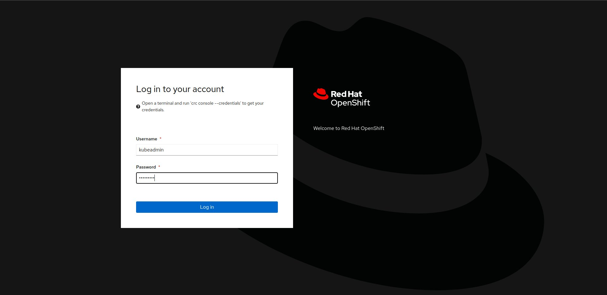

CRC - CodeReady Containers
What is CRC?
The CRC (Red Hat CodeReady Containers) is a solution to deploy OpenShift cluster on your local machine in minutes. Red Hat OpenShift provides a complete solution that includes a stable Kubernetes engine with robust security and many integrated capabilities required to operate a complete application platform. It comes in several editions including as a fully managed public cloud service or self-managed on infrastructure across datacenters, public clouds, and edge. [ source ]
That project is very resource-hungry, because it deploys a dedicated libvirt instance (virtual machine), configures network, deploys Kubernetes inside the instance (VM) and on the end deploys OpenShift with operators. All new pods that would be spawned later by sf-operator would be running inside that VM, that's why the minimum of our configuration to deploy CRC and sf-operator took 14 GB of RAM, 6 vcpus and 60 GB of HDD.
Few words about SF Operator
The SF Operator project is most likely a new solution that the Software Factory Project will use. The operators are software extensions to Kubernetes that make use of custom resources to manage applications and their components. Operators follow Kubernetes principles, notably the control loop.
Why are we using it?
The SF Operator project is already tested on a vanilla Kubernetes deployment, however we cannot assume that all of Software Factory Project users are using it. The future Software Factory release that would be based on Kubernetes deployment should be also tested on different platform. That's why we aim to create an universal operator, that would be possible to deploy on many Kubernetes base clusters.
How to setup CRC?
The CRC deployment is easy to deploy. The CRC community has simple documentation. Also the OpenStack community creates its own repository where they describe how to setup the environment. More information you can find here.
The Software Factory Project uses the crc Ansible role, which you can find in sf-infra repository.
Here is a playbook that deploy a crc cluster using the crc role we maintain:
- hosts: crc.dev
vars:
crc_debug: true
nested_virtualization: false
openshift_pull_secret: |
< ADD YOUR PULL-SECRET.TXT HERE>
pre_tasks:
- name: Ensure CentOS runs with selinux permissive
become: true
selinux:
policy: targeted
state: permissive
roles:
- extra/crc
where the pull-secret.txt can be generated here.
Ingress - how it's done for testing purpose?
Kubernetes Ingress is an API object that provides routing rules to manage external users' access to the services in a Kubernetes cluster, typically via HTTPS/HTTP. With Ingress, you can easily set up rules for routing traffic without creating a bunch of Load Balancers or exposing each service on the node. [ source ]
In short, ingress exposes HTTP and HTTPS routes from outside the cluster to services within the cluster. Traffic routing is controlled by rules defined on the Ingress resource. [ source ]
On Kubernetes deployment created with Kind tool, to forward ports from the host to an ingress controller running on the node, it just requires to add a dedicated extraPortMapping parameter into the configuration file.
By default, the VM L0 (the VM where you are deploying CRC), creates a new network that is also routed on that VM. In most cases, the ip address of the crc services are bound to 192.168.130.11. It means, that to communicate with the services such as Openshift Web Console or sf-operator deployed services, it requires to:
- add security group rules to your instance (if you are deploying CRC in Cloud Provider VM),
- setup HAProxy that will redirect queries to the services working in CRC network.
How to add the security group rules should be described in your Cloud Provider documentation, so I will skip that step.
How to enable CRC Console by using HAProxy
The manual is based on blog post. How to enable:
- install required services
sudo dnf install -y haproxy policycoreutils-python-utils
- configure environment variables
export SERVER_IP=$(hostname --ip-address |cut -d\ -f3)
export CRC_IP=$(crc ip)
- create HAProxy configuration
cat <<EOF | sudo tee /etc/haproxy/haproxy.cfg
global
defaults
log global
mode http
timeout connect 0
timeout client 0
timeout server 0
frontend apps
bind ${SERVER_IP}:80
bind ${SERVER_IP}:443
option tcplog
mode tcp
default_backend apps
backend apps
mode tcp
balance roundrobin
option ssl-hello-chk
server webserver1 ${CRC_IP}:443 check
frontend api
bind ${SERVER_IP}:6443
option tcplog
mode tcp
default_backend api
backend api
mode tcp
balance roundrobin
option ssl-hello-chk
server webserver1 ${CRC_IP}:6443 check
EOF
- add SELinux policy (if you did not set SELinux to permissive)
sudo semanage port -a -t http_port_t -p tcp 6443
- start the service
sudo systemctl start haproxy
sudo systemctl enable haproxy
- optionally, generate the /etc/hosts entries (execute that on crc host, but add into your local VM)
echo "$(ip route get 1.2.3.4 | awk '{print $7}' | tr -d '\n') console-openshift-console.apps-crc.testing api.crc.testing canary-openshift-ingress-canary.apps-crc.testing default-route-openshift-image-registry.apps-crc.testing downloads-openshift-console.apps-crc.testing oauth-openshift.apps-crc.testing apps-crc.testing" | sudo tee -a /etc/hosts
Above steps are automatically done by Ansible due it has been included in extra/crc role in sf-infra project.
After applying that, the OpenShift WebUI console should be available on https://console-openshift-console.apps-crc.testing/.
Remove CRC pull-secret.txt from the cluster
If you would like to make a snapshot of the CRC VM and remove sensitive content from the cluster, it is required to perform an action:
# From https://github.com/crc-org/snc/blob/master/snc.sh#L241
mc_before_removing_pullsecret=$(/usr/local/bin/oc get mc --sort-by=.metadata.creationTimestamp --no-headers -oname)
/usr/local/bin/oc replace -f https://raw.githubusercontent.com/crc-org/snc/master/pull-secret.yaml
mc_after_removing_pullsecret=$(/usr/local/bin/oc get mc --sort-by=.metadata.creationTimestamp --no-headers -oname)
while [ "${mc_before_removing_pullsecret}" == "${mc_after_removing_pullsecret}" ]; do
echo "Machine config is still not rendered"
mc_after_removing_pullsecret=$(/usr/local/bin/oc get mc --sort-by=.metadata.creationTimestamp --no-headers -oname)
done
The local-path-provisioner
Local Path Provisioner provides a way for the Kubernetes users to utilize the local storage in each node. Based on the user configuration, the Local Path Provisioner will create either hostPath or local based persistent volume on the node automatically. [ source ].
For the CI deployment, we did not provide dynamic persistent volume, but we create few local persistent volume, which is storing the service content on the CRC VM disk. To create the PVs, we choose the solution proposed by OpenStack K8S Operators project.
Connect to the CRC VM
Sometimes for debuging purpose you would like to connect to the CRC instance and check for example the VM logs. The crc community has prepared a documment how to do it. Below simple script to connect to the VM.
CRC_IP="192.168.130.11"
cat << EOF >> ~/.ssh/config
Host crc
Hostname ${CRC_IP}
User core
IdentityFile ~/.crc/machines/crc/id_rsa
IdentityFile ~/.crc/machines/crc/id_ecdsa
StrictHostKeyChecking no
UserKnownHostsFile /dev/null
EOF
chmod 0600 ~/.ssh/config
ssh -i ~/.crc/machines/crc/id_ecdsa -o StrictHostKeyChecking=no -o UserKnownHostsFile=/dev/null core@${CRC_IP}